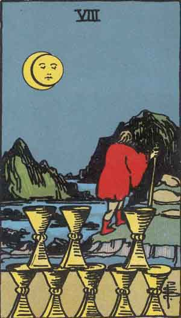

Eight of Cups

Positive
Disappointment, Withdrawal, Escapism
- Reorganize your external environment to reflect your internal desires. Realize what you already have.
- Renouncing the world does not mean having nothing. It means your soul is not possessed by your surroundings.
- This may be the time to leave a disappointing situation, but never a disappointing person.
- There may be sadness when saying goodbye. But still say it.
- Pretending to sleep may bring sleep but pretending to be happy will not bring happiness.
- Ask yourself "How does this serve my higher good?"
Negative
Avoidance, Indecision, Fear of Loss
- Having lots of options can make it harder to pick just one. Don't let perfect be the enemy of good.
- Avoidance can lead to aimlessness. Revive a sense of belonging thru a human connection.
- Don't be afraid to walk away from something. It is a sign of respect to yourself.
- You have to be true to yourself to find a lifestyle that fits you. Otherwise, your stress will increase.
- If you recognize your own bondage, do you recognize if it feels comfortable? Is your comfort zone your shackle?
- Lose the things, find the people. Commit yourself to walking toward those you love.
Quotes
- Focus more on your desire than on your doubt, and the dream will take care of itself. - Marcia Wieder